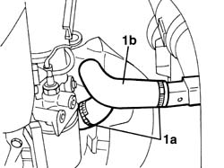
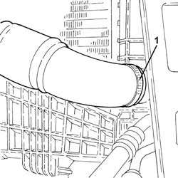
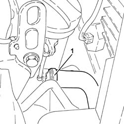

1088D10 lower sleeve for coolant outlet from radiator - r + r
- Path
- Procedures > 10 ENGINE UNIT > 1088 ENGINE COOLING > 1088D coolant hoses and sleeves > 1088D10 lower sleeve for coolant outlet from radiator - r + r
- Kind
- repair procedure (removal / refitting; the operation number is the code)
- Applies to
- all engines; all production periods
- Interactive page
- https://sloeber94.github.io/elrnDB-fPnd/en/#/2752545
Applies to: engines: 1.1; all production periods
 Removing
Removing
 Refitting
RefittingFit a suitable container for coolant draining.
1. Remove securing bands (1a) and disconnect hose (1b) from the radiator and from the rigid coolant inlet pipe on the water pump

Applies to: engines: 1.2 8v; all production periods
Removing
RefittingFit a suitable container for coolant draining.
1. Remove securing bands (1a) and disconnect hose (1b) from the radiator and from the rigid coolant inlet pipe on the water pump
Applies to: engines: 1.3 JTD 16v; all production periods
Removing
RefittingRemove the car from the ramps.
1. Loosen the band and disconnect the lower radiator coolant outlet hose from the radiator, radiator side.

Applies to: engines: 1.1; all production periods
Refitting
RemovingConnect hose to radiator and to water pump coolant intake rigid pipe. Secure pump using retaining bands
Applies to: engines: 1.2 8v; all production periods
Refitting
RemovingConnect hose to radiator and to water pump coolant intake rigid pipe. Secure pump using retaining bands
Applies to: engines: 1.3 JTD 16v; all production periods
1. Loosen the band and disconnect the lower radiator coolant outlet hose from the radiator, engine oil heat exchanger end.

Applies to: engines: 1.3 JTD 16v; all production periods
Refitting
RemovingRefit the lower coolant outlet sleeve from the radiator, engine oil heat exchanger side and tighten the band.
Connect the lower coolant outlet hose from the radiator, radiator side, and tighten the band.
Remove the car from the ramps.